gay:
- Joyous and lively, merry, happy, lighthearted.
- bright, brilliant
- given to social life and pleasures
- wanton, licentious
- homosexual or relating to homosexuals.
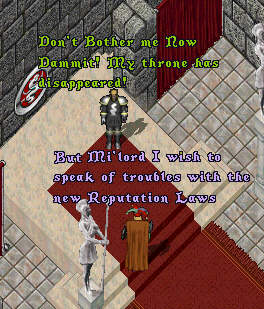
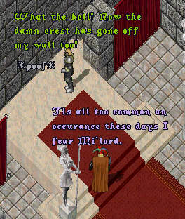
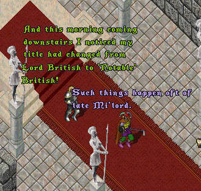
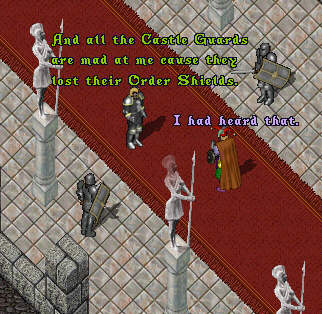
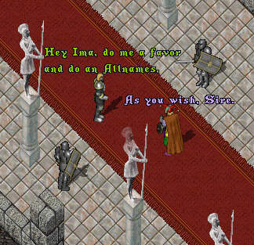
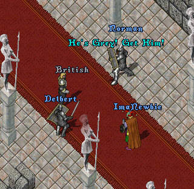
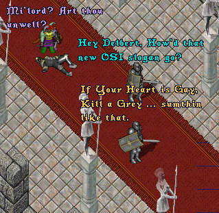
This cartoon makes reference to a three letter word (gay). It is not intended to draw any reference to homosexuality but if you are offended by the use of this harmless word in any context please leave now!!! The Webster's New World Dictionary definition of the word is posted below: You may take your pick of any of the first four definitions when translating the words spoken. This message was made necessary by a number of seriously disturbed individuals who spend their time rooting through every thing they can find looking for hidden meanings. Thank you and enjoy the 'toon!
gay:
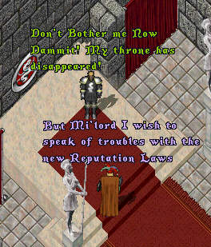
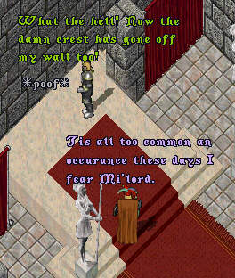
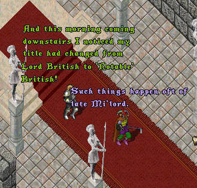
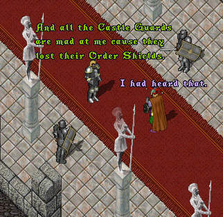
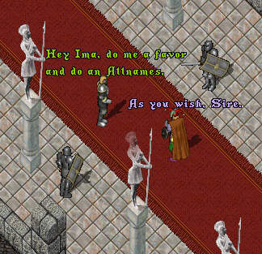
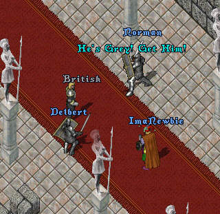
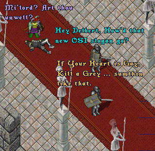